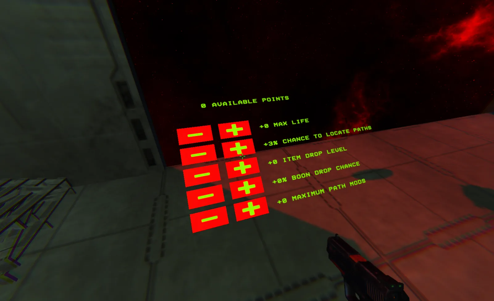
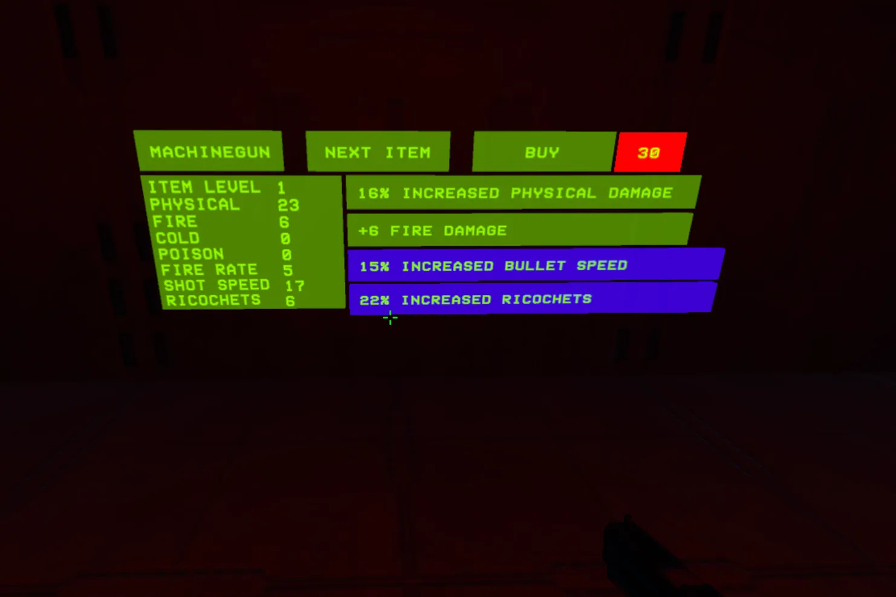
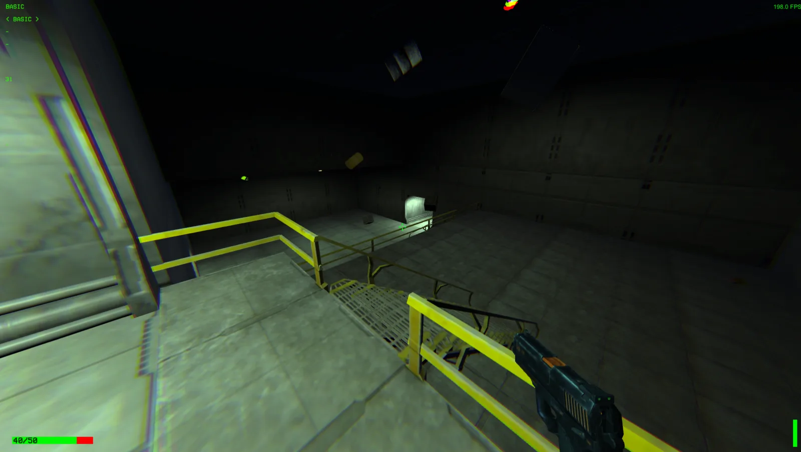
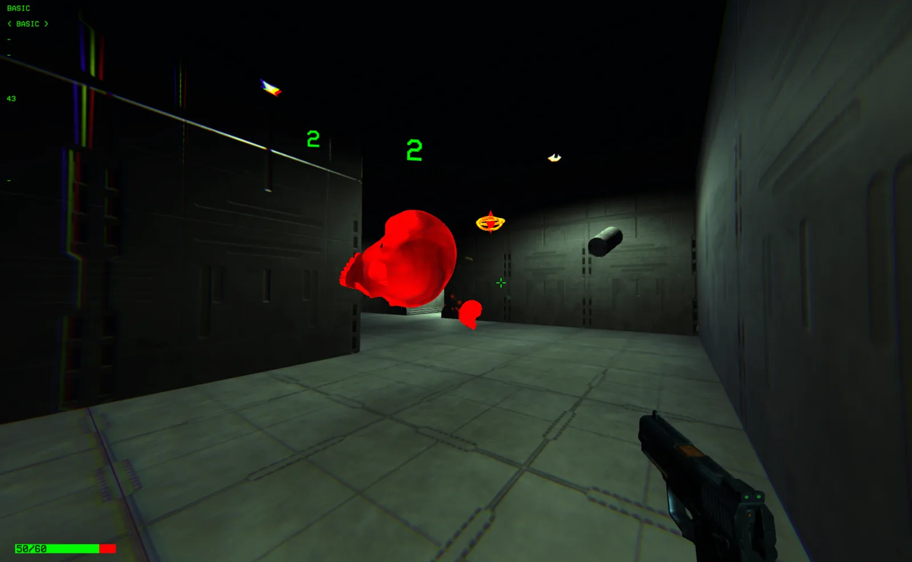

VoidScape
- Engine
- Unity
- Language
- C#
- Role
- Solo, everything
- Status
- Playable, 2 bosses
A first-person roguelike where the player writes their own difficulty and the game pays out in proportion. Runs, weapons and boons are all rolled, not authored. Two things survive a run: the guns you built and the skill tree you paid for with special runs. Everything else is gone when you die.
Choosing a run. Every modifier on a mission raises the payout.
The problem
Every roguelike I played had the same failure: the god run. The drops line up, damage goes exponential, and the boss you were supposed to fear dies in one shot. The run you waited ten hours for is the least interesting one you will play, because the game stopped asking anything of you at exactly the moment it should have asked the most.
Stat scaling causes it. If power is a number and enemies are a number, one eventually runs away from the other. Tuning does not fix that. It only moves where the break happens.
Two answers
The classic answer is to let the player pick a harder difficulty, and VoidScape has that. The run itself is rolled on a board of missions, each with its own modifiers, and every modifier raises the payout. It is a good answer, but it is not a new one. Numbers against numbers still break eventually.
The new answer is the special run. Once a run is done you can attempt to go deeper, onto a path that scales on execution rather than on numbers: longer, more broken, more elites, a boss group waiting at the end. A build that trivialises the normal run still has to be played out there, and it is the only place skill points come from.
The board
Before entering, you stand at a bank of monitors. Each one searches for a mission and shows what it found: a rolled set of modifiers and the payout they earn. Modifiers cut both ways. Some make things worse: more monster health, damage or action speed, halved healing, grenades disabled, slower movement, a whole damage type made immune. Some make things better: a higher weapon level, extra gun parts per kill, more boon rooms, every side room special.
Every modifier on the list, good or bad, raises elite chance, special room frequency and drop rate, with a random component on top so two equally loaded missions are not equally worth taking. You read the board, weigh it, and choose. A mission can be pushed further or the whole board rerolled, paid in gun parts, and the price climbs each time.
Four modifiers do not explain themselves at all: Danger, ERROR,
UnknownX and UnknownY. They carry the lowest weights in the table. The
only way to find out is to take one.
How many modifiers a mission can carry is capped by the skill tree. A fresh save gets one. Deeper special runs raise the cap, so the biggest payouts sit behind the part of the game that tests you.
Going deeper
Attempting to go deeper. Special runs are the only source of skill points. 0:41.
The special run is not a mission. It is a path built from bridge pieces out in the void, each one shifted and tilted at random, with a chance for any piece to be missing. Monsters wait on every other piece, turning elite as you near the end, and a boss group holds the last one. Every completed run makes the next one longer and harder, and each level of depth is worth one skill point.
Skill points buy the only permanent upgrades in the game: max life, weapon drop level, boon drop chance, the chance to locate missions, and the cap on modifiers a mission can carry. The tree is small on purpose. Its job is to attach long-term progression to the part of the game that a lucky build cannot cheese.
Two progressions

The skill tree. Five upgrades, paid only with special runs.
Two kinds of progression run through a save, and they last different lengths of time. Boons last one run. They are by far the strongest modifiers in the game, and they are gone when you die. Weapons and the skill tree last forever. A gun you build stays in the inventory across runs, with its layouts saved, and skill points never expire. Those two are what make it a roguelike rather than a series of unrelated attempts.
The two are designed to need each other. Most boons are flat numbers, not multipliers: +50 physical damage, +10 fire, +1% freeze chance. A boon is only as good as the gun that scales it, and +10 fire damage is worth nothing on a gun that never sets anything alight. So the long game is keeping a spread of guns in the inventory, so that whatever a run rolls, there is a weapon that turns those boons into something.
A boon offer after a fight. Take it, turn it down for 10 health, or pay gun parts to reroll.
Fifty-odd boons, and most of them cost something
Boons are weighted by rarity and stack for the rest of the run. One you take or refuse leaves the pool, so a run never sees the same offer twice.
The flat upgrades exist, but the interesting half are trades. Lose 20 max health for +10 fire damage. Shrink your explosion radius by 90% to double its damage. Deal all your poison damage instantly, at half value. Halve your bullet speed for +50 physical.
Then there are the ones that change what the gun is. Ricochet force doubles on every bounce. Ricochets home onto poisoned enemies. Every bounce spawns a cold shot. Enemies killed by cold burst into eight more. Fire bullets survive their own explosion, or explode a second time a moment later, or pull instead of push. One turns being launched by your own fire blast into a speed buff, which makes shooting the floor to travel a legitimate build. Elements are not separate lanes, so builds collide in ways I never wrote down.
Weapons are generated, not designed
A gun rolls a base type, a level and a set of modifiers. There are four base types, basic, shotgun, machine gun and sniper, each with an elemental variant in physical, fire, cold and poison. The sniper round leaves at twice the speed of anything else and bounces ten times.
Modifiers come in three grades: interior for damage, exterior for handling, and special for the build-defining effects like ignite chance, freeze chance, double damage and bleeding. Each grade has a weight that drops by half when it lands and to nothing the second time, so a gun carries at most two of any grade and comes out mixed instead of stacking five of the same thing. Specials start at a hundredth of the weight of the others, which keeps them rare without a hard cap.

A rolled machinegun in the shop. Base stats on the left, one rolled mod per row.
Adding, removing, and scrapping mods at the bench.
The bench
Gun parts drop from enemies and pay for adding mods, removing them, or scrapping a weapon outright. Adding costs the weapon's level times its mod count, and the bench raises its price every time you use it, so pushing a good gun further costs progressively more. Scrapping refunds twice the base price of a mod, so a near miss is worth real money if you break it down instead.
Four weapon slots and eight saved layouts persist between runs. Building a gun is a decision with consequences past the session.
The map only goes up
Every step of a run climbs: a flight of stairs, a corridor, a room, joined doorway to doorway. A mission is ten to twenty main rooms plus whatever depth the modifiers add, and the last room is always the boss.
Because the path only ever goes up, the space around a new room is almost always empty, and that is what gives the generator its freedom. Tiles that were never designed to sit next to each other can be chained anyway, because nothing occupies the space they need. There is an overlap check, but it rarely has to say no, and when a layout fails ten times the whole level is thrown away and rolled again.
Spare doorways grow side rooms: encounters, specials, and a rotating set of shops and reward rooms, with a symbol on the door saying which.

One generated room. Catwalks and drops give the dashes somewhere to go.
Finding your way
Generated rooms can all look the same, and getting lost was one of the first problems players hit. Two rules fix it. Up is always forward, so the next room is wherever the stairs are. And every room is lit white until you complete it, then its lights turn red. At a glance you know where you have been and where you have not.
Every room has versions
Every room carries optional pieces that each roll their own chance to exist, so the same room comes back different. The trapped versions matter most: laser beams that sweep the floor, spikes with a short warning, blast plates, lava that rises while you fight. In a game where movement is the best defence, a trap forces you to plan your movement instead of spending it, which makes an encounter genuinely hard without making a single enemy stronger. A few of those variants roll so rarely that finding them takes many runs.

Mid-fight in a generated corridor.
Things floating about
Rooms are also full of floating objects, drifting and spinning at random, and some of them matter. Canisters detonate when a bullet touches them and set off their neighbours. Medkits drift past the walkway. The point is rarity: something useful can turn up anywhere, so even an empty room with nothing to fight is worth a look.
Feel: movement
Movement is snappy and forgiving, and most of the work is in the small things. Coyote time and jump buffering, so inputs land when the player means them. Three separate ground checks, so a landing never gets missed. Gravity that triples past the apex of a jump, which makes it feel heavier without cutting its height. A side dash that cuts gravity and makes you invulnerable while it lasts, plus one air dash per landing. Input direction locks after a jump or dash until you press the opposite key, so momentum carries instead of letting you steer mid-air. Enemy hits and explosions apply real knockback through a mass-weighted impact vector.
Feel: shooting and the camera
Bullets are physics bodies that bounce. A sniper round leaves at 5000 units a second and ricochets ten times, and boons can double the bounce force on every hit. Keeping that stable when stats go extreme, so nothing falls apart or feels wrong at the top end, took longer than any other system in the game. Every enemy has a floor on how fast it can act, so speed modifiers push right up to the edge and no further.
The camera alone took weeks. Mouse look runs through framerate-independent exponential smoothing, so it feels the same at 60 and at 240 frames a second.
What it cost
Fifty interacting boons on top of rolled weapons and rolled missions means the combination space is not testable by hand. Most of the work was not writing mechanics. It was making them compose without producing states I never anticipated, and accepting that some of those states are the reason the game is worth playing. A fire build inside a mission that rolled fire immunity is a problem nobody authored, and the player has to solve it with what they brought.
This was my first project, and I wrote it without AI tools.
Where it stands
Playable through two bosses. The generators are all in place, missions, weapons, mods, boons, rooms, and what is missing is content volume rather than architecture. Adding a modifier means adding a row to a table. Adding a room means adding a prefab. That was the point of building it this way.
Download the prototype on itch.io →
One full run on a short mission, from the hub out and back. 1:43, uncut.